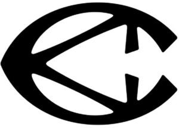

Trade Mark Journal No.2025/046 14 November 2025
WO0000001868098 (9,18,25,35)
Office of origin: European Union Intellectual Property Office (EUIPO)
Date of International Registration:11 March 2025
Date of designation in the UK:
11 March 2025

International priority date claimed: 26 February 2025
(European Union Intellectual Property Office (EUIPO))
(19148144)
- Class 9
- Downloadable electronic publications [magazines]; downloadable electronic catalogs; spectacles; spectacle cases; spectacle frames; chains for spectacles; spectacle cords; spectacle cases; covers for mobile telephones; covers adapted for computers; covers for computer keyboards; cases for sunglasses; covers for tablets or digital tablets; covers for e-book readers; cases for electronic diaries; protective shoes.
- Class 18
- Leather and imitation leather; animal skins; trunks and suitcases; umbrellas; sunshades; walking sticks; saddlery; whips; shoulder straps; wallets; bags; bags of leather; sports bags; weekend bags; canvas bags; carry-on bags; beach bags; multi-purpose transport bags; footwear bags; waist and hip bags; bags (purses); leather bags; cloth bags; travel bags; bags, purses and wallets; handbags; wallets of leather; suitcases, handbags, briefcases and other object-carriers; traveling cases [leatherware]; attaché cases; backpacks; purses; canvas bags; garment bags, shirt covers and garment covers; shoulder belts [straps] of leather; cases and briefcases; card cases [notecases]; chain mesh bags not made of precious metals; handbags; handbags not made of precious metals; school satchels; leather backpacks for carrying infants; vanity cases.
- Class 25
- Clothing for men, women and children; footwear (except orthopedic footwear); hats; headbands [clothing]; bathing caps; bath sandals; underwear; scarves; footwear for sporting activities; beach shoes; belts [clothing]; money belts [clothing]; skirts; foulards; caps [headwear]; caps; gloves (clothing); raincoats; socks; Ascots; soles for footwear; heels; inner soles; trousers; pareus; sundresses; visors as headwear; wooden shoes; coats; esparto shoes or sandals; non-slip devices for footwear; boots; boot uppers; half-boots; fittings of metal for footwear; toe caps for footwear; reinforcements for footwear other than non-orthopedic reinforcements; non-orthopedic heel pieces for footwear [heel reinforcements]; dresses; shirts; T-shirts; vests; jackets; denim jackets; stuff jackets; leather dresses; clothing of imitation leather; gabardines [clothing]; gymnastic shoes; jerseys [clothing]; jerseys [pullovers]; sweatshirts; jerseys [sweaters]; footwear uppers; parkas; clothing made of leather; clothing made of animal skins; knitwear [clothing]; knitted dresses; knitted clothing; knitted underwear; clothing for gymnastics; outerclothing; sandals; suits; slippers; sports shoes; dress shoes for men and women; casual footwear.
- Class 35
- Retail and wholesale services in stores, via global computer networks, via catalog, via mail order, via telephone, via radio and television and via other electronic means in relation to sports articles, preparations for cleaning, polishing, scouring and abrading, soaps, perfumery products, essential oils, cosmetics, hair lotions, dentifrices, waxes for leather, preservatives for leather [waxes], polishing preparations, footwear polishes [shoe polish], shoe wax, shoe polish for footwear, powder for footwear, cream for footwear, preparations for bleaching leather, preparations for cleaning and shining leather and footwear, shoe sprays, precious metals and their alloys, jewelry, costume jewelry, horological and chronometric instruments, ornaments of precious metals for footwear, watch straps, cases adapted to contain jewelry and timepieces, cuff links, badges of precious metals, jewelry cases, key rings of precious metals, magazines and publications, downloadable electronic publications, electronic publications recorded on computer media, multimedia content, downloadable electronic catalogs, spectacles, spectacle cases, spectacle frames, cases for contact lenses, eyeglass chains, eyeglass cords, mobile telephone covers, covers adapted for computers, covers for computer keyboards, covers for sunglasses, covers for tablets or digital tablets, covers for e-book readers, covers for electronic diaries, covers for e-book readers, protective shoes; retail and wholesale services in stores, via global computer networks, via catalog, via mail order, via telephone, via radio and television and via other electronic means in relation to leather and imitations of leather, animal skins, hides, trunks and suitcases, umbrellas, parasols, walking sticks, saddlery, whips, shoulder belts, wallets, bags, leather bags, sports bags, weekend bags, canvas bags, handbags, beach bags, allpurpose carrying bags, shoe bags, waist and hip bags, bags, leather bags, cloth bags, travel bags, bags, purses and pocket wallets, briefcases, leather wallets, luggage, bags, satchels and holders for objects, traveling cases [leatherware], attaché cases, backpacks, purses, duffel bags, garment bags, shirt covers and garment covers, leather shoulder belts, attaché cases and document cases, card cases [notecases], chain mesh bags not of precious metals, handbags, handbags not of precious metals, school satchels, sling bags for carrying infants, vanity cases, leather cases for spectacles, key rings, clothing for men, women and children, footwear [except orthopedic footwear], hats, headbands [clothing], bathing caps, bath sandals, underwear, scarves, footwear for sports activities, beach footwear, belts [clothing], money belts [clothing], skirts, scarves, beanies, caps, gloves [clothing], raincoats, socks, neckerchiefs, soles [footwear], heels, inner soles, trousers, sarongs, beach dresses, visors being headwear, clogs, coats, espadrilles, non-slip devices for footwear, boots, boot uppers, ankle boots, fittings of metal for footwear, toe caps for footwear, reinforcements for footwear, heelpieces for footwear [heel reinforcements], dresses, shirts, t-shirts, vests, jackets, denim jackets, heavy jackets, leather dresses, clothing of imitations of leather, gabardines [clothing], gymnastic shoes, jerseys [clothing], jerseys [pullovers], sweatshirts, jerseys [sweaters], footwear uppers, parkas, clothing of leather, fur clothing, knitwear, knitted dresses, knitwear [clothing], knitted underwear, clothing for gymnastics, outerclothing, sandals, suits, slippers, sport shoes, dress footwear for men and women, casual footwear.
CAMPER, S.L.
Representative: ABRIL ABOGADOS, C/ Zurbano, 76-7º Dcha., E-28010 Madrid, SPAIN